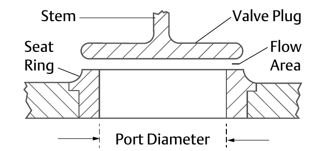

Quick-Opening Construction

- 1Stem — transmits actuator travel to the plug
- 2Valve Plug — lifts off the seat ring, uncovering the port
- 3Seat Ring — the plug's mating surface; the port opens here
- 4Flow Area — the unobstructed opening exposed at a given travel
- 5Port Diameter — sets the maximum flow area the construction can ever expose
After Control Valve Handbook, 6th ed., Fig. 3.40 — used directly, own printed labels retained. Component Index: cvh-cmp-quick-opening-construction.